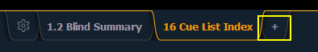

Displays can be opened and closed in different ways, depending on the display. Many displays are accessible from the browser, while other displays are accessible from the softkeys. The blind displays of record targets (also called “lists”) can be quickly accessed by double pressing the record target button (for example, [Cue] [Cue] opens the cue list index).
The Live/Blind display is open as tab 1. The playback status display is always open as tab 2. Neither of these displays can be closed. Multiple instances of Live/Blind and PSD can be opened.
Every display has an assigned tab number. Tab numbering is useful for navigating to views. See Tab Numbers for a list of displays and their tab numbers.
The Home Screen shows all of the available displays for quick selection. Click on the {+} button by the tabs to access the home screen.

Open and navigate the browser as described in Using the Browser . You can open record target lists, such as the preset list or cue list index, by navigating to Browser> Record Target Lists.
Note: Any time you wish to return to the browser, simply press [Displays].
You can open list views of any record target by double-pressing the key for the desired record target (for example, [Cue] [Cue] opens the cue list index).
To open any displays accessible from the softkeys, press [Displays]. The softkeys will repaint to display:
Any of these softkeys will open the associated display with a single press.
To close any tab display, select the display by using the [Tab] key or other means of navigation. When the desired display is active, press [Escape] to close it.
To close a display in the CIA, press the [Displays] key and the browser will reappear.
To close all displays except for the live/blind display and the playback status display (tabs 1 and 2), press [Shift] & [Tab].
You can also close tabs by using the Tab Tools. See Tab Tools for more information.